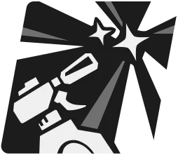
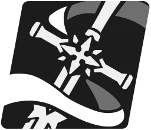
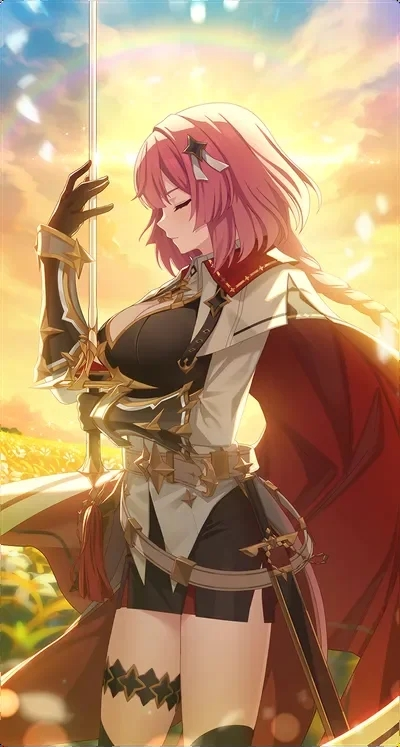
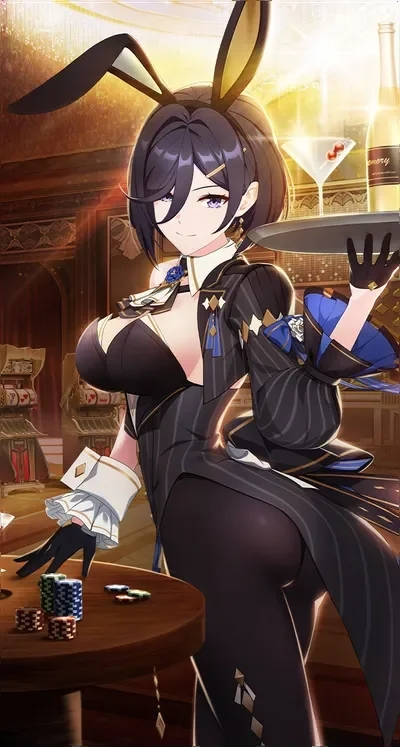
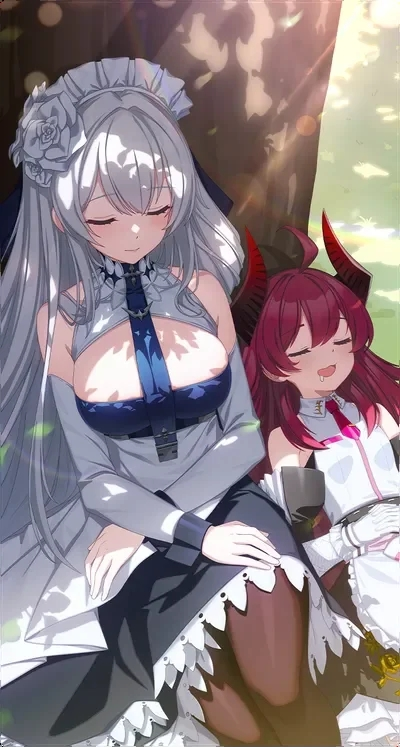

스타세이비어 에밀리 스킬 운용법, 장비 세팅과 아르카나 추천 정리
에밀리는 맞을수록 궁극기가 빨리 돌아오는 달 속성 디펜더라서, 스킬 순서를 외우기 전에 '최대 HP'에 붙은 효과가 무엇인지부터 잡아 두면 훨씬 편합니다.
이 글은 영문 가이드 두 곳(LDShop·AllClash)과 한국어 가이드 두 곳(VortexGaming·BlueStacks), 나무위키 검색 요약을 교차해 정리했습니다. 한국어 스킬명은 나무위키 검색 요약 표기이고 장비 세트와 아르카나는 영문 표기 그대로라서, 인게임 화면과 한 번만 대조해 보세요. LDShop 가이드는 3월 말에 올라온 글이라 이후 에밀리 개편이 있었다면 달라질 수 있고, 수치가 한 곳뿐인 건 '가이드에 따르면'이라고 밝혀 두겠습니다.
올클래시 가이드에 실린 에밀리 일러스트입니다. 은발에 메이드 차림이 이 캐릭터의 첫인상이죠.
이미지 출처: 올클래시 에밀리 빌드 가이드
1. 스킬 구성 → 2. 스킬 레벨업 순서 → 3. 운용 순서 → 4. 장비 세팅 → 5. 아르카나 추천
1. 에밀리 스킬 구성, 최대 HP 비례가 핵심
에밀리는 스킬 피해량과 배리어가 모두 최대 HP에 비례하는 달 속성 디펜더입니다.
한 줄로 줄이면 '맞아서 쿨타임을 돌리는 메이드'입니다. 맞을 때마다 스탬프가 찍히는 포인트 카드를 떠올리시면 쉬운데요, 패시브가 피격 때마다 궁극기 쿨타임을 깎아 주기 때문입니다. 배리어는 전투 시작 때 패시브로 한 번, 그리고 특수기로 아군에게 한 번 붙습니다.
| 구분 | 이름 | 효과 | 쿨타임 |
|---|---|---|---|
| 패시브 | '준비된 메이드'(Ready Maid) | 최초 전투 시작 시 자신에게 1턴 배리어 · 피격 후 '턴 다운 서비스' 쿨타임 1턴 감소 · 전체공격을 맞으면 1턴 추가 감소 | 상시 |
| 기본기 | Commence Combat Cleanup | 단일 적 공격 · 냉각 1스택 획득 | 확인 불가 |
| 특수기 | '클리닝 서비스'(Cleaning Service) | 아군 대상 3턴 공격력 증가와 배리어 · 자신은 냉각 3스택과 추가 턴 | 5턴(나무위키 요약 기준) |
| 궁극기 | '턴 다운 서비스'(Turn-Down Service) | 적 전체 공격 · 아군 전체 방어력 증가 · 해제 불가 'Awakened Memory' 1스택 · 냉각이 최대 스택이면 냉각을 전부 지우고 자신의 쿨타임 2턴 감소 | 확인 불가 |
LDShop 가이드에 따르면 전체공격을 맞았을 때 50% 확률로 냉각 1스택도 붙고, 궁극기의 아군 방어력 증가는 2턴입니다. 피해량은 전부 최대 HP 비례라서 HP를 올리는 쪽이 곧 화력과 배리어를 같이 올리는 길입니다. 궁극기에 붙는 해제 불가 'Awakened Memory' 1스택은 구체적인 효과까지는 가이드에서 확인하지 못했습니다.


왼쪽부터 패시브, 기본기, 특수기, 궁극기 아이콘입니다. 위 표와 같은 순서예요.
이미지 출처: LDShop 에밀리 빌드 가이드
확인 위치: 인게임 에밀리 상세 > 스킬 화면 · 공식 공지 · 확인되면 이 박스를 실제 값으로 교체해 주세요.
2. 스킬 레벨업 순서, 특수기와 궁극기는 높게
스킬 레벨은 특수기와 궁극기를 높게, 기본기는 낮게 가져가는 쪽이 두 가이드가 겹치는 지점입니다. 다만 표현 방식은 출처마다 다릅니다.
| 출처 | 서술 방식 | 내용 |
|---|---|---|
| LDShop | 목표 레벨 | 기본기 Lv.3 · 특수기 Lv.6 · 궁극기 Lv.6 |
| AllClash | 우선순위 | 특수기(최우선) > 궁극기 > 기본기(가장 낮음) |
레벨 숫자는 LDShop 쪽에만 있습니다. LDShop 가이드에 따르면 특수기와 궁극기는 Lv.6까지, 기본기는 Lv.3까지가 목표입니다. AllClash는 숫자 없이 서열만 주는데, 특수기가 최우선이고 기본기가 가장 뒤입니다. 재료가 모자라면 기본기보다 특수기와 궁극기에 먼저 쓰세요. 패시브에 레벨을 투자하라는 근거는 두 곳 어디에서도 찾지 못했습니다.
스킬과 같이 챙길 것이 여정(Stalla Archives) 훈련인데요, 두 가이드가 같은 순서를 줍니다.
- 체력을 먼저 올립니다. 실패 확률이 높아질 때까지 체력부터 채우세요.
- 그다음 힘(공격)을 올립니다.
- 인내는 마지막입니다.
3. 운용 순서, 효과를 이어 붙여 본 로테이션
에밀리의 운용은 기본기로 냉각을 쌓고, 특수기로 냉각과 배리어를 채운 뒤, 냉각이 최대일 때 궁극기를 쓰는 흐름으로 읽힙니다.
어느 가이드에도 로테이션 예시는 없어서, 아래는 스킬 효과를 이어 붙여 만든 추론이라는 점만 알고 보세요.
- 기본기로 적 한 명을 치면서 냉각 1스택을 받습니다.
- 특수기 '클리닝 서비스'로 아군에게 공격력 증가와 배리어를 주고, 자신은 냉각 3스택에 추가 턴을 받습니다. 나무위키 요약 기준 쿨타임이 5턴이라 자주 쓰지는 못합니다.
- 냉각이 최대 스택까지 찼다면 궁극기 '턴 다운 서비스'를 씁니다. 냉각이 전부 지워지면서 쿨타임이 2턴 줄기 때문입니다.
- 그 사이에 맞을 때마다 '턴 다운 서비스'가 한 턴씩 빨리 돌아오고, 전체공격을 맞으면 한 턴이 더 당겨집니다.
여기서 놓치기 쉬운 함정은 냉각이 차기 전에 궁극기부터 던지는 것입니다. 효과 문구대로라면 냉각이 최대 스택일 때만 냉각 소거와 쿨타임 2턴 감소가 붙는 것으로 읽힙니다. 다만 냉각이 몇 스택에서 최대인지는 끝내 못 찾아서, 특수기 3스택만으로 최대에 닿는지는 주인장도 모르겠네요(ㅋㅋ). 인게임에서 냉각 표시가 가득 찼는지 보고 쓰시는 게 안전합니다.
4. 장비 세팅, 목걸이 속도와 반지 HP
장비는 목걸이 메인을 속도로, 반지 메인을 HP 계열로 맞추는 것이 두 가이드의 공통점입니다.
| 슬롯 | 메인 스탯 | 근거 |
|---|---|---|
| 무기 | ATK | AllClash |
| 방어구 | DEF | AllClash |
| 장갑 | HP | AllClash |
| 목걸이 | 속도(SPD) | LDShop·AllClash 일치 |
| 반지 | HP(LDShop) / HP%(AllClash) | 두 가이드가 갈림 |
| 신발 | SPD | AllClash |
세트는 두 가이드의 표기 체계가 달라서 따로 적습니다. 배리어가 에밀리의 핵심 스킬이다 보니 AllClash 구성에는 세 가지 모두 Barrier가 붙어 있다는 점이 눈에 띕니다. PvE 위주면 Health+Barrier, PvP까지 같이 보신다면 Speed+Barrier 쪽으로 갈린다고 보시면 됩니다.
- LDShop은 'Preses Set'을 권하고, 4세트는 HP% > Insight > Turn Speed 순, 2세트는 HP%와 Effect Evade입니다.
- AllClash는 PvE에서 Health+Barrier, 혼합 콘텐츠에서 Insight+Barrier, PvP에서 Speed+Barrier를 권합니다.
서브옵션은 LDShop 기준 속도 > HP > 방어 > 치명확률 > 치명피해 > 공격 순입니다. AllClash는 무기와 장갑만 공개했는데 SPD, HP%, 치명확률, ATK% 순으로 적었고, 속도와 HP를 앞에 둔다는 점은 두 곳이 같습니다. 장비 칸으로 풀면 속도는 목걸이와 신발에, HP는 장갑과 반지에 걸리는 셈이라 메인 스탯 표만 따라가도 방향은 잡힙니다.
확인 위치: 인게임 장비 화면 > 세트 효과 · 공식 공지 · 확인되면 이 박스를 실제 값으로 교체해 주세요.
5. 아르카나 추천, 두 가이드가 겹치는 세 장
아르카나는 A Knight's Oath, The Perfect Bunny Girl, A Quiet Moment Of Rest 세 장이 LDShop과 AllClash 추천에 모두 들어 있습니다.



왼쪽부터 A Knight's Oath, The Perfect Bunny Girl, A Quiet Moment Of Rest입니다. 두 가이드가 같이 꼽은 세 장이에요.
이미지 출처: LDShop 에밀리 빌드 가이드
| 출처 | 추천 아르카나 |
|---|---|
| LDShop(1순위) | No Pain No Gain · A Knight's Oath · The Perfect Bunny Girl · A Quiet Moment Of Rest · Made By Petra |
| AllClash | A White Moon Shines With the Sun's Warmth(메인) · A Quiet Moment Of Rest · The Perfect Bunny Girl · Young Lady of Stranis · Death for the Flowers (대안으로 A Knight's Oath) |
두 표에서 겹치는 세 장부터 맞추시고, 나머지는 보유 상황에 맞춰 고르면 됩니다. 세 장 말고는 가이드마다 고르는 카드가 갈립니다. 나무위키 요약에는 에밀리의 아르카나 유무가 성능 차이를 크게 만든다고 적혀 있고, 한국어 가이드 VortexGaming은 에밀리를 아르카나 육성 목표 T1에, BlueStacks 한국어 티어표는 S+에 올렸습니다. AllClash는 SSR 아르카나의 활성 특성만 쓸 만하다고 봅니다. 주인장이라면 겹치는 세 장부터 맞추고, 나머지는 가진 카드를 보고 고를 것 같아요.
확인 위치: 인게임 아르카나 도감 · 공식 공지 · 확인되면 이 박스를 실제 값으로 교체해 주세요.
참고한 곳
· LDShop, 스타세이비어 에밀리 빌드 가이드 (확인일 2026.10.09 · 가이드 게재 2026.03.28)
· AllClash, 에밀리 아르카나·장비·훈련 빌드 가이드
· 스튜디오비사이드, 스타세이비어 공식 게임 페이지
▶ 같이 보면 좋은 글
· 스타세이비어 그웬 스킬, 장비, 파티 조합 공략